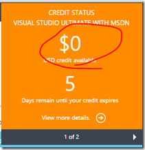
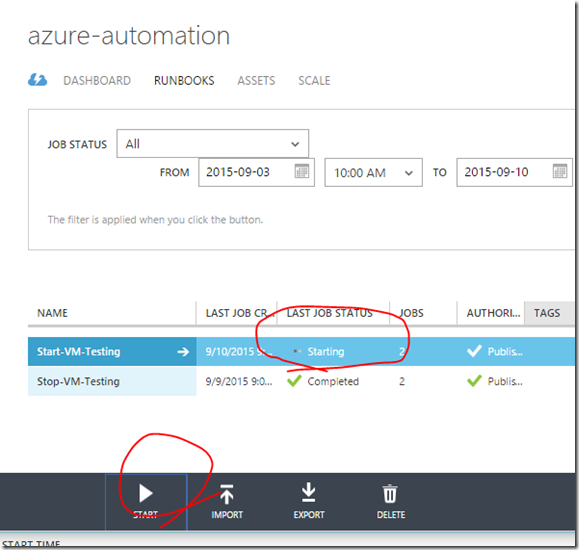

We always wanted to shut down our VM's when not in use so that we can save our subscription bill amount. But many times, we forget to stop it resulting $0 credit :( like me below. 
This not only affects our ongoing cloud developments but affects our important hosted apps in production. Yes, recently I published an Office Add in/Apps to the store(production) which is not available now. At present, we do not have an option to allot or block certain amount of credit towards an app so that such critical production would continue.. Any one aware of blocking the credits to different offerings?
Side note : Just learned from here –> Amazon EC2 instances are billed by the "hour" as opposed to by the "minute" with Azure.
Let us talk about how we can automate certain Azure infra tasks like auto shutdown or deallocate after testing using Azure Automation. This blog post is based on our PFE blog but wanted to try first-hand experience to start as blog. I encourage you to try at your phase, so that it gives good idea exploring various options and possibilities with PowerShell. Most importantly. you can reuse the same automation for your real time resource management down the line. Ok, let’s start.
Microsoft Azure Automation
- provides a way to automate a simple <-> complex manual infra tasks, often repeated or could be a long running, error-prone activities performed by devops(mostly) during testing/deployment can be easily be automated using scripting (PowerShell). You can reuse the same script for DEV, TESTING, STAGING and PROD environment easily for similar replication/setup. Let me break down in points for easy understanding..
-
It also help us to create, supervise, manage and deploy resources to azure using runbooks (Windows PowerShell workflows)
-
You can schedule it for Day/Monthly/yearly so that it can trigger and run the jobs as scripted. It's kind of a scheduler for managing Azure resources.
-
The runbooks contains the PowerShell works easily with resources like Azure Websites, VM's, Storage, SQL Server, and other popular Azure services using command lets.
-
Another good candidate, we can also manage windows updates, auto backups/recovery, copy files to storage, prepare machines for deployment etc..
-
Best part is, one can see the job status and result in the portal. It also gives the nicer dashboard displaying failed request, queued jobs and stopped etc.
Note : For this hands-on, you should have a valid azure subscription. If you have got MSDN account, then you could activate it under MSDN subscription page as below or try this link for free trial - https://azure.microsoft.com/en-us/pricing/free-trial/
{kind=link}
Microsoft Azure Automation - Overall execution
{kind=link}
Let us see it in action:
1) How to start the Automation from Azure old portal or management portal - http://manage.windowsazure.com/
{kind=link}
2) Same thing you can try it from Preview Portal also, but we are going to see how to use the management portal for the rest of the hands on -
{kind=link}
3) After creating the Automation a/c from the Step1, now click on Assets > Add Settings for adding the credential passed as known value.
{kind=link}
{kind=link}
4) Enter the credential of the co-admin account. For creating Co-Administrator, please refer here - Azure Automation: Authenticating to Azure using Azure Active Directory http://azure.microsoft.com/en-us/blog/azure-automation-authenticating-to-azure-using-azure-active-directory/
{kind=link}
5) Now, let us go ahead and add the Runbook as below.
{kind=link}
6) Now, you would get the default workflow as below. Go ahead and copy the below PowerShell script. Make sure, our workflow name and our runbook name should be same. This is very important. Right now we are going to create runbook for Starting our VM’s.
{kind=link}
workflow start-my-sharepoint2016-testing {
$cred = Get-AutomationPSCredential -Name "Azure-Automation-Cred"
Add-AzureAccount -Credential $cred
Start-AzureVM -ServiceName "sharepoint216" -Name "sharepoint2016"
}
7) Now save the changes and publish it, so that you can do the scheduling.
{kind=link}
{kind=link}
{kind=link}
8) Let us test by executing it manually..
{kind=link}
{kind=link}
{kind=link}
9) Now, I see the VM has started, similarly you can do it for stopping the VM at your scheduled time.
{kind=link}
For stopping VM,
workflow Stop-VM-Testing {
$cred = Get-AutomationPSCredential -Name "Azure-Automation-Cred"
Add-AzureAccount -Credential $cred
Stop-AzureVM -ServiceName "sharepoint216" -Name "sharepoint2016" -force
}
I suggest this free ebook from MVA for further detailed documentation about its possibilities and advanced reading : http://www.microsoftvirtualacademy.com/ebooks#9780735698154\
{kind=link}
Starter links:
-
Automating the Cloud with Azure Automation : https://www.microsoftvirtualacademy.com/en-US/training-courses/automating-the-cloud-with-azure-automation-8323
See you next time with some other interesting stuff..
//Happy reading.